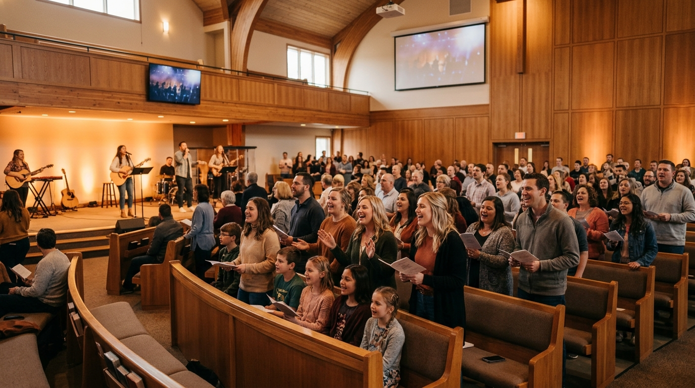

Uma Igreja em Célula. No Templo e de Casa em Casa.
"E todos os dias, no templo e de casa em casa, não cessavam de ensinar e de pregar Jesus, o Cristo." Atos 5:42
Culto no Templo IEBI
Uma Igreja com Raízes Firmes e Coração em Deus
"Até aqui nos ajudou o Senhor — e para Ele são todas as coisas!" (1 Samuel 7:12 / Romanos 11:36)
A Igreja Evangélica Batista de Intermares (IEBI) nasceu no coração de Deus a partir de um pequeno grupo de oração realizado em uma garagem em 1998. Ao longo de mais de duas décadas e meia, temos testemunhado a fidelidade do Senhor transformando vidas, restaurando famílias e edificando uma comunidade viva e acolhedora.
Sob a liderança pastoral do Pr. Augusto Rodrigues e Pra. Ivete Rodrigues, nossa missão é amar a Deus sobre todas as coisas, proclamar o Evangelho com fidelidade bíblica e ser uma família de fé onde cada pessoa encontra refúgio, comunhão e propósito em Cristo.
Seja você alguém em busca de um recomeço espiritual, uma família que procura um lar na fé ou um visitante que chega pela primeira vez: as portas da nossa casa e os nossos corações estão abertos para você!
Nossa História: Construindo Vidas desde 1998
Clique nos anos abaixo para navegar pela nossa linha do tempo e acompanhar a evolução da IEBI.
O Primeiro Culto na Garagem
Nossa igreja surgiu como fruto do trabalho missionário da Igreja Evangélica Batista de João Pessoa que, através de um pequeno grupo de irmãos cheios de fé, realizou o primeiro culto na garagem de uma casa em Intermares, Cabedelo - PB.
Mudança para a Av. Mar Vermelho
Após um ano de reuniões e novos convertidos, o trabalho foi estabelecido formalmente como congregação e transferiu suas atividades para a principal avenida do bairro (Av. Mar Vermelho), expandindo sua visibilidade e acolhimento.
Posse do Terreno & As Primeiras Tendas
A congregação tomou posse de um terreno próprio doado pela prefeitura de Cabedelo. Para dar continuidade imediata às celebrações, foram instaladas tendas temporárias que testemunharam cultos cheios do Espírito Santo e intenso fervor espiritual.
1º Templo de Alvenaria & Emancipação da IEBI
Com a construção do primeiro templo de alvenaria concluída, realizou-se o culto solene de emancipação. A comunidade passou a se chamar oficialmente Igreja Evangélica Batista de Intermares (IEBI), inaugurando uma nova era de maturidade e governo espiritual.
Transição Celular & Obras do Megatemplo
Nossa igreja adotou a estrutura de Igreja em Células na visão do MDA (Discipulado Um a Um e pastoreio nos lares), e em conjunto iniciou a construção do grande templo com arquitetura contemporânea e acústica tratada para acolher o constante crescimento.
Inauguração do Templo para 800 Pessoas
Em uma celebração vibrante de gratidão a Deus, inauguramos o novo templo com capacidade para oitocentas pessoas. Hoje vivemos a plenitude desse propósito: celebrar a Deus no templo e cuidar de vidas de casa em casa!
Células IEBI: Um Lugar para Cada Fase da Vida
Células por faixa etária: Descubra o grupo ideal para você e sua família. Encontre o grupo mais próximo da sua residência e venha participar!
Os 4 Pilares da Visão Celular
Esse processo forma o trilho por onde o discípulo caminha, amadurece e se torna um multiplicador:
Ganhar: Alcançando Vidas com Amor e Testemunho
A célula deve ser um ambiente de braços abertos. O foco não é apenas manter os que já estão na igreja reunidos, mas alcançar novas vidas de forma natural e relacional. Isso acontece através do testemunho no dia a dia, da oração intencional por amigos e do convite para que participem do ambiente acolhedor da célula.
Consolidar: O Cuidado de Perto nos Primeiros Passos
É a etapa do "cuidado de perto". Quando alguém novo chega, o pilar da consolidação garante que essa pessoa não se sinta perdida. Ela é acompanhada, orientada nos primeiros passos da fé e integrada à comunhão, garantindo que crie raízes sólidas na comunidade.
Treinar: Formando Ministros Ativos e Discipuladores
A visão DNA entende que a igreja não forma membros passivos, mas sim ministros ativos. Aqui, o discípulo recebe ensino sistemático, descobre seus dons espirituais, forja o caráter e é treinado por meio do exemplo (o famoso "vida na vida") para assumir responsabilidades no Reino.
Enviar: Multiplicando Líderes e Abrindo Novos Lares
Uma célula saudável, assim como um organismo vivo, cresce e se multiplica. A multiplicação não é tratada como divisão, mas como o envio alegre e estratégico de líderes que foram treinados para abrir novas frentes, pastorear novas pessoas e reiniciar o ciclo.
Rede Kids
Espaço alegre e acolhedor onde as crianças aprendem os caminhos de Deus, criam amizades saudáveis e crescem na fé através de momentos dinâmicos.
Rede Teen
Ambiente dinâmico feito especialmente para pré-adolescentes fortalecerem sua fé em Cristo, tirarem dúvidas e caminharem juntos com alegria.
Rede Black
Lugar de conexão real para adolescentes debaterem temas práticos do dia a dia, aprofundarem a fé, orarem uns pelos outros e viverem o evangelho.
Células de Adultos
Grupos de comunhão, oração mútua, cuidado pastoral e estudo bíblico prático com encontros em diversos dias da semana para acolher você e sua família.
Quer ajuda para encontrar a sua célula?
Envie uma mensagem pelo WhatsApp informando seu bairro e faixa de idade. Nossa equipe de integração indicará o líder e o endereço mais próximo da sua casa!
Alimente sua Fé Onde Você Estiver
Ouça sermões edificantes, reflexões práticas e mensagens gravadas durante nossos cultos dominicais.
Vencendo a Ansiedade com a Paz que Excede Todo Entendimento
Com base em Filipenses 4:6-7, aprenda a entregar as preocupações em oração e experimentar o descanso que sé a presença de Deus pode proporcionar no meio das tempestades da vida.
Restaurando o Diálogo no Casamento
Dando Passos Ousados no Deserto
Despertando os Dons que Deus te Deu
Próximos Grandes Eventos
Conferências, retiros, batismos e ações sociais para você se envolver com a nossa comunidade.
Sexta & Sáb
Conferência da Família 2026: Lares Fortes
Dois dias imersivos de palestras com preletores convidados, oficinas práticas sobre criação de filhos e renovação de votos matrimonias.
Domingo
Grande Batismo nas Águas
Celebre publicamente a sua nova vida em Cristo! O batismo é um passo inesquecível de obediência e testemunho de fé.
Sábado
Mutirão Solidário: Natal Sem Fome
Distribuição de 500 cestas natalinas, brinquedos para crianças e atendimentos médicos e odontológicos gratuitos.
Envie o seu Motivo de Oração
Preencha os campos abaixo. Seus dados são tratados com total sigilo e amor.
Investindo no Reino e Transformando Vidas
"Cada um dé conforme determinou em seu coração, não com pesar ou por obrigação, pois Deus ama quem dé com alegria." (2 Coríntios 9:7)
Sua fidelidade nos dízimos e ofertas voluntárias sustenta as atividades diárias do templo, a assistência direta a centenas de famílias necessitadas e o envio de missionários pelo Brasil e pelo mundo.
Transparência Total
Prestação de contas periódica e auditoria aberta aos membros.
Impacto Direto
Mais de 40% das receitas direcionadas a projetos de acolhimento social.
Favorecido: Igreja Evangélica Batista de Intermares
Favorecido: Igreja Evangélica Batista de Intermares
Venha Celebrar Conosco
Fácil acesso, excelente infraestrutura e uma recepção calorosa te aguardando.
Nosso Endereço
Av. Mar Tirreno, s/n - Intermares
Cabedelo - PB, CEP 58102-177
Secretaria & WhatsApp
Atendimento de Terça a Sexta, das 09h às 18h.
WhatsApp: (11) 98765-4321 | Telefone: (11) 3456-7890
E-mail Institucional
contato@igrejagracavida.com.br
Perguntas Frequentes (FAQ)
A Célula é um pequeno grupo de pessoas que se reúne semanalmente na casa de um membro da igreja para estudar a Bíblia de forma prática, orar pelas necessidades uns dos outros, criar laços de amizade sincera e desfrutar de momentos de comunhão e lanche. é o coração do cuidado pastoral da IEBI.
Sim! Temos células setorizadas por faixa etária e público: GraçaKids (crianças de 0 a 11 anos), Conexão Teens (adolescentes de 12 a 17 anos), Geração Viva (jovens de 18 a 29 anos), Famílias & Casais (células mistas), Mulheres de Fé, Homens de Honra e Vida Plena (Melhor Idade 60+). Todos encontram seu lugar!
De forma alguma! Nossas células e cultos são 100% gratuitos e abertos a qualquer pessoa, independentemente de sua denominação, crença ou momento de vida. Você e sua família serão recebidos com muito carinho e respeito.
Ao chegar ao templo, você cadastra sua criança na recepção infantil e recebe uma pulseira com código de segurança. As salas são climatizadas, separadas por faixa etária (berçário até 11 anos) e monitoradas por tios e tias capacitados com lanche e lições bíblicas criativas.
é uma grande alegria! Se você é membro da IEBI e deseja receber uma célula em sua residência, converse com seu líder de célula ou procure a coordenação pastoral no final de um culto ou via WhatsApp para receber as orientações.